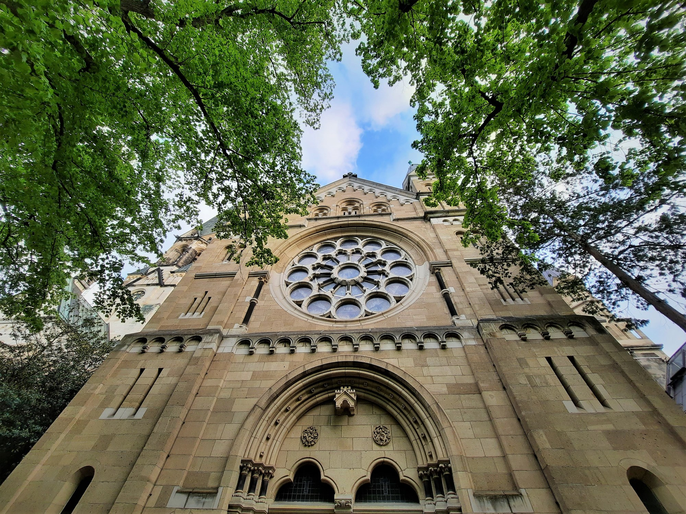
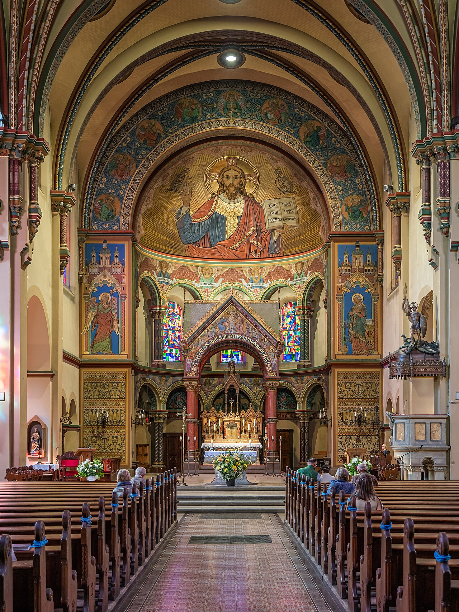
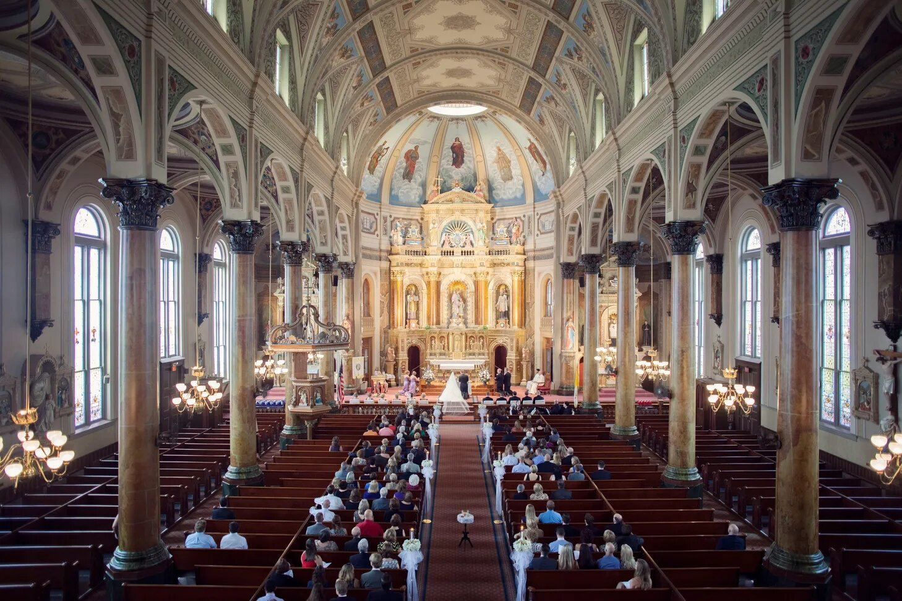
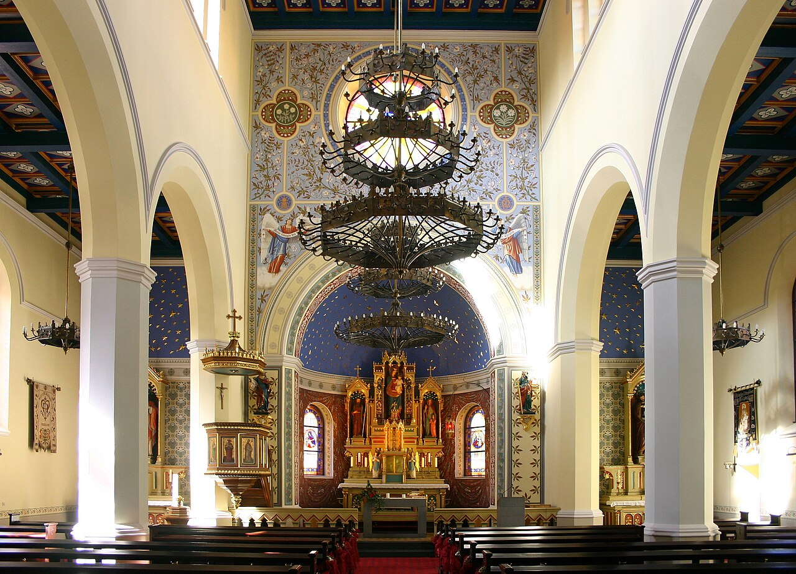
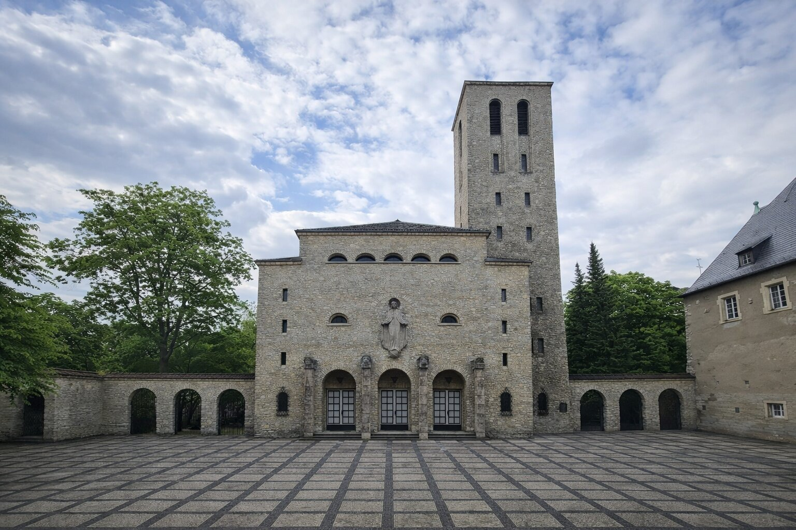
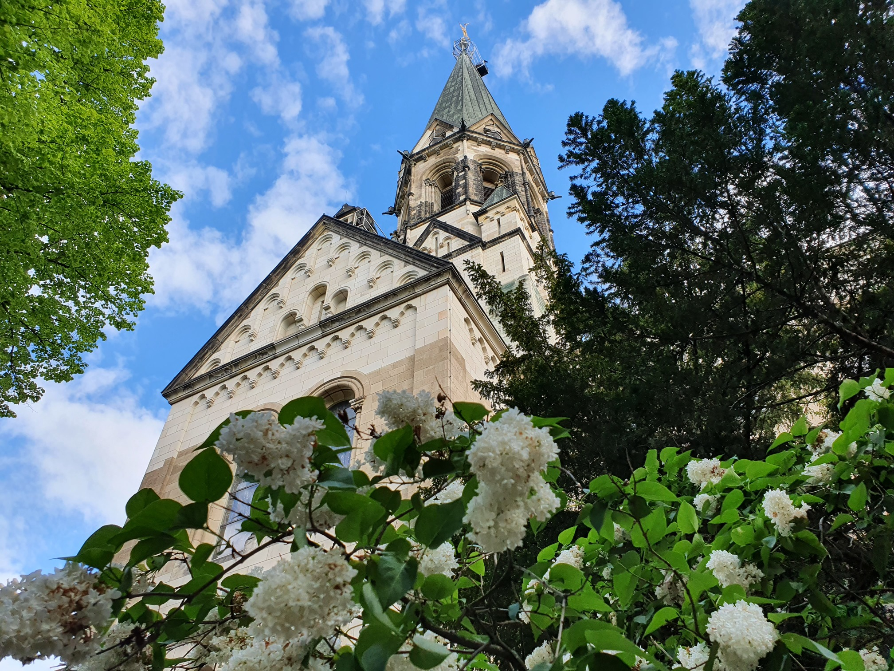

+
Johannes-Basilika w sercu Kreuzbergu
Błogosławieni, którzy wprowadzają pokój, albowiem oni będą nazwani synami Bożymi.
Mt 5,9
Ważne daty i uroczystości w naszej parafii
Johannes-Basilika
Lilienthalstr. 5, 10965 Berlin-Kreuzberg
Towarzyszymy wiernym na każdym etapie duchowej drogi





Polska Misja Katolicka w Berlinie istnieje od 1945 roku i jest duchowym domem dla polskojęzycznych katolików w stolicy Niemiec.
Nasza wspólnota gromadzi się w zabytkowej Johannes-Basilice w sercu Kreuzbergu. Pielęgnujemy polską tradycję, kulturę i wiarę - otwierając nasze drzwi dla wszystkich, którzy szukają wspólnoty modlitwy w języku polskim.
Zapraszamy do uczestnictwa w naszych nabożeństwach, sakramentach i życiu parafialnym. Jesteśmy wspólnotą otwartą, gotową służyć każdemu, kto szuka Boga.
Proboszcz Polskiej Misji Katolickiej w Berlinie
Serdecznie zaprasza wszystkich Polaków i osoby niemieckojęzyczne do uczestnictwa w naszych nabożeństwach i życiu parafialnym.
Wikariusz
Wikariusz
Wikariusz
Dołącz do jednej z naszych wspólnot